My Games
While programming minor projects for fun, I might come up with an idea that would work well as a proper game... Or I might just have spent too much of my time on an obscure project!
Either way, here is a list of games that are published for the public to enjoy.
"Spaceships" (WIP) 
I started this project in Unity but switched to Godot after getting fed up with it, a decision I do not regret. It's still at its very early stages, but I actually plan on finishing this game... eventually.
The game idea is simple, but in practice a bit strange; essentially, think of an FPS tank game, but in space with a 3rd dimension of movement. Additionally, you can see from 2 cameras at the same time - from your cockpit & turret - which had the idea of making sure you "don't get lost" but turned into an interesting challenge to work with.
I will upload the game here once it's at a playable stage, and maybe it'll even end up on Steam!
Downloads
lol no
Tetris Clones *
TetrisColour (originally named CrappyTetris, before the colour update) is a lightweight Tetris clone with a simple interface. It was written in the Java-like Processing IDE during my time at highschool, primarily out of boredom.
The controls are customizable, but default to the arrow keys for movement and Z/X for rotation. There is a small variety of pain-inducing colour schemes, but by editing the .pde files, one may edit or create new schemes.
Recently I made a much better version, this time in C using ncurses to run in the terminal. This one features the spin-related black magic I wasn't aware of when I made TetrisColour, and I feel it's a lot more robust than the Java (ew) implementation. This one's only available for Linux, though.

Bounce-a-Meteor 
Bounce-a-Meteor is an arcade/survival game that slowly gets faster as you play. In the game you are tasked with protecting planet Earth from an endless meteor storm using the most inefficient and ridiculous defense system: Giant trampolines!
By spinning the whole planet around, you need to make sure the space rocks land on the trampolines instead of Earth for as long as you can. Sometimes, you will see helpful anti-matter meteors which scientists on Earth can use to repair the planet, or if hit by normal meteors, cancel each other out and leave less for you to worry about!
I'm slowly re-working this game in Godot, which will include much better graphics, effects, and even multiplayer!